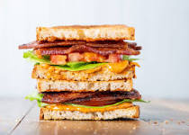

Bacon Lettuce Tomato

With the freshest ingredients this is the king of the sandwich world and by following the steps below can be given an extra kick by completing with your BBQ Grill
Ingredients
- Bread
- Tomato
- Lettuce
- Bacon
Recipe Instructions
- Lightly toast the bread on the BBQ Grill
- Thinly slice the tomato. Optional add to the Grill for a smokey flavour
- Cook the Bacon on the BBQ
Return to the main page